1. 랜딩 히어로 영상 · Landing Hero Video (1080p)
PaceGain은 평소 걷는 속도를 기준으로 조금 더 빠르게 걸어 아낀 시간을 보여주는 iPhone · Apple Watch · Android · Wear OS 앱입니다. 회원가입, 광고, 분석 SDK 없이 기기 안에서 동작합니다.
📱 Android 실기기 테스트용 정식 릴리스 APK (v1.0.0)
Play Store 등록 전 실기기에서 직접 걸어보고 검증할 수 있는 서명된 정식 릴리스 APK 파일입니다. 비밀번호 입력 후 다운로드가 시작됩니다.
2. 사용 튜토리얼 · Step-by-Step Tutorial & Walkthrough Video
- 건강 기록 한 번 연결 (Onboarding & Permissions): 첫 실행 온보딩에서 주간 걷기 목표(주 1~7일)와 매일 걷기 알림 시간을 고르고, Apple 건강(HealthKit) 또는 Android Health Connect 권한을 연결합니다.
- 평소 속도 자동 학습 & 직접 설정 (Usual Pace Baseline): 최근 걷기 운동 기록이 충분하면 평소 걷기 속도(km/h · 분/km)를 자동으로 계산합니다. 설정에서 직접 입력하거나 워치의 “평소 걸음 측정” 모드로 5분·100m 이상 걸어 측정할 수도 있습니다.
- 오늘 요약 & 주간 목표 링 (Today & Weekly Goal Ring): 오늘 아낀 예상 시간·거리·칼로리와 주간 목표 달성 링을 홈 화면에서 한눈에 확인합니다.
- 워치 단독 실시간 측정 (Standalone Watch Tracking): Apple Watch · Wear OS 워치에서 시작 한 번으로 실시간 절약 시간(`+분/초`)과 평소 대비 속도 배율(`1.16×`)을 보며 걸을 수 있습니다. 측정이 끝나면 페어링된 휴대폰으로 자동 동기화됩니다.
- PaceGain Pro 기간 비교 & 기록 관리 (Insights & History): 선택형 일회성 구매(비소모성 인앱 상품)로 최근 7·30·90일 성과를 직전 동일 기간과 비교하고, 기록 탭에서 날짜별 걷기 상세 내역을 관리합니다.
3. iPhone (App Store) 스크린샷 갤러리 · 6종
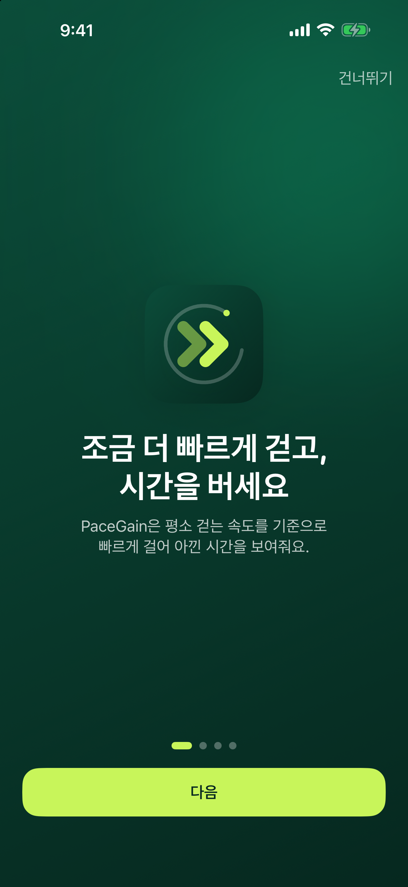
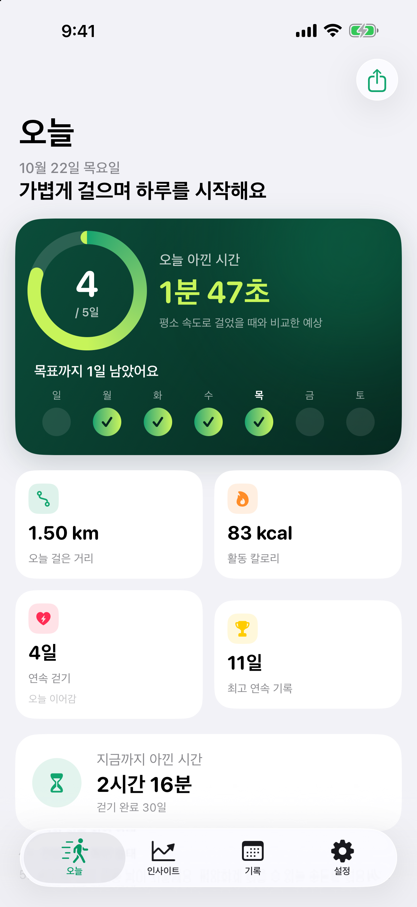
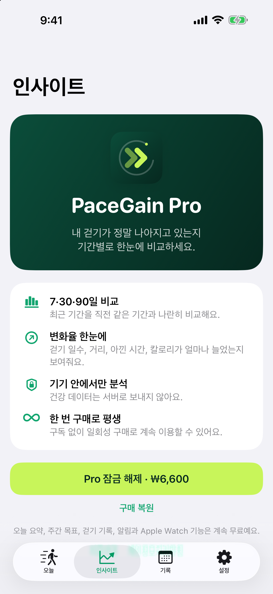
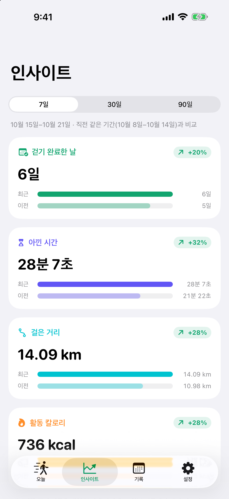
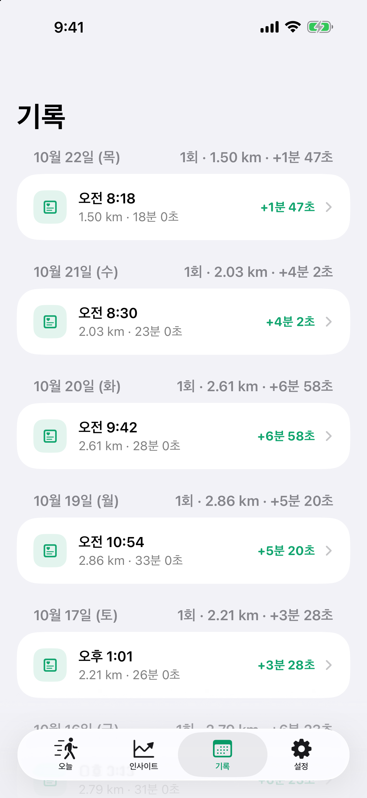
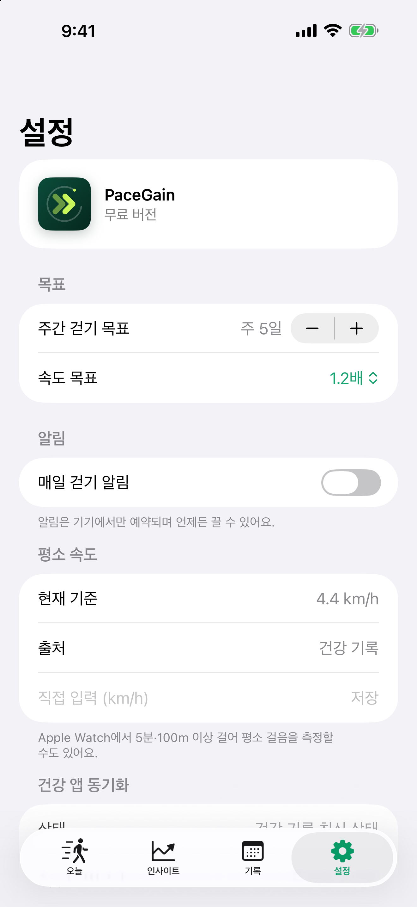
4. Android (Google Play) 스크린샷 갤러리 · 6종
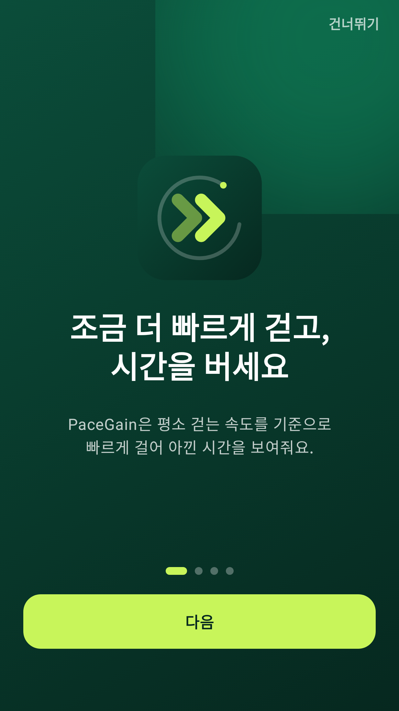
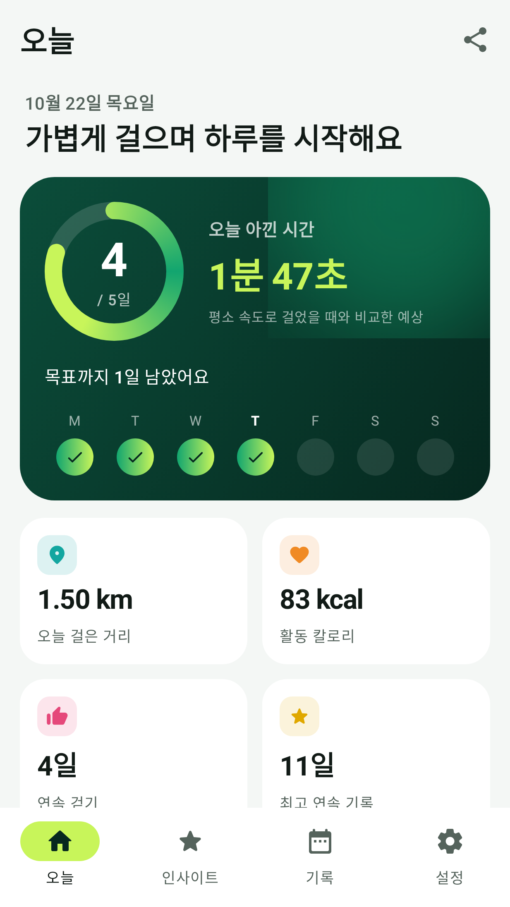
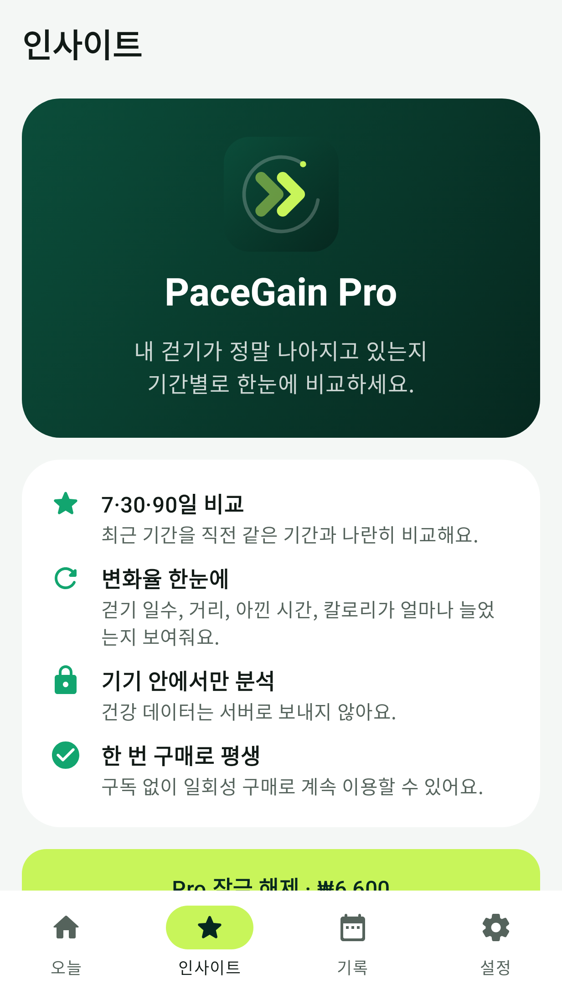
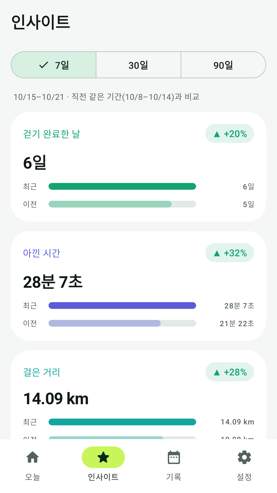
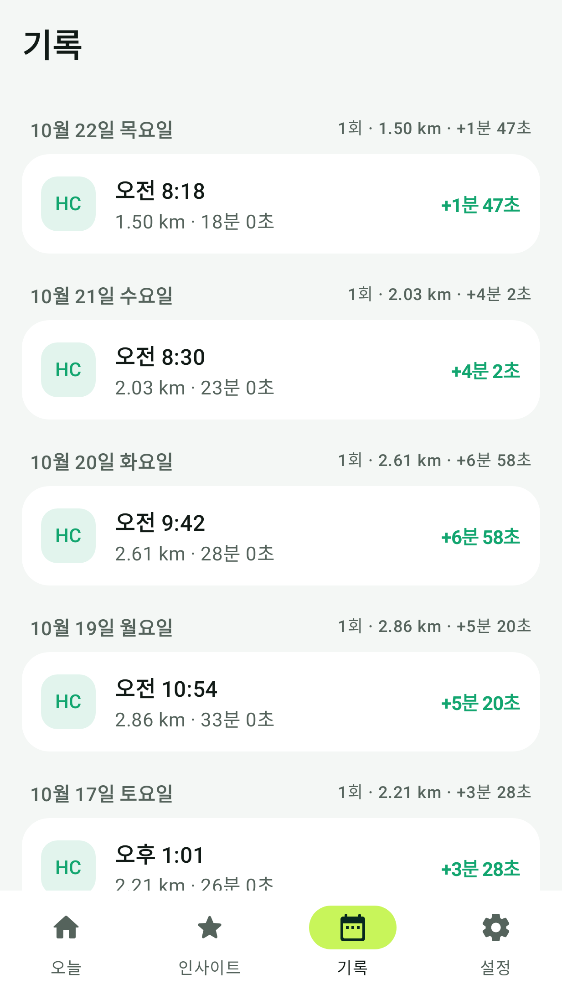
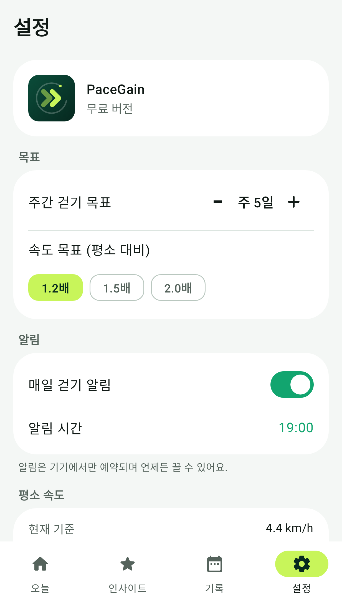
5. 스토어 그래픽 배너 · Store Feature Graphics (1024×500)
6. 상용 출시 준비 및 검증 리포트 · Commercial Release v1.0.0 Report
실기기 수동 테스트를 제외한 모든 코드, 스토어 컴플라이언스, 인앱 결제 검증, 단위 테스트 및 릴리스 번들 빌드가 완료되어 origin/main 브랜치에 반영되었습니다.
| 검증 영역 | 상태 | 세부 내역 |
|---|---|---|
| Apple 코어 & StoreKit 테스트 | PASS (43/43) | PaceGainCoreTests (도메인 36개 + ProPurchaseStoreTests 7개 통과) |
| Apple Xcode 빌드 | PASS | PaceGainPhone (iOS Debug/Release), PaceGainWatch (watchOS Debug) 빌드 성공 |
| Android 단위 테스트 | PASS (58/58) | :core:test (43개) + :mobile:testDebugUnitTest (15개, Billing/HealthConnect/Sync 포함) |
| Android Lint & Release AAB | PASS | :mobile:lintDebug, :wear:lintDebug 에러 0건 · R8 축소 적용 :mobile:bundleRelease, :wear:bundleRelease 생성 완료 |
| 스토어 정책 & 개인정보 컴플라이언스 | PASS | iOS/watchOS PrivacyInfo.xcprivacy, HealthKit & Health Connect 권한 사유, ProGuard/R8 규칙 완비 |